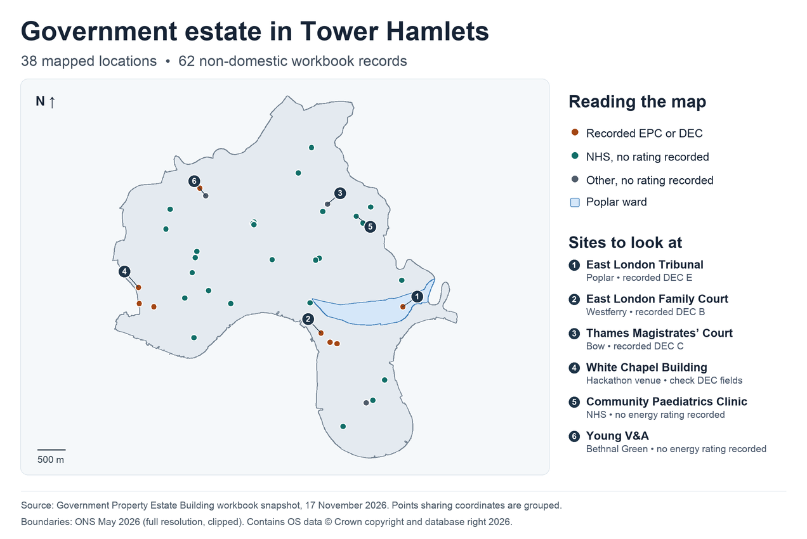

Compare neighbourhoods
Switch between the three deprivation indices and inspect the distinct Census values for smaller areas.
Open the interactive mapExplore which public facilities merit an energy investigation, what evidence we have and what to check before committing to work.

Switch between the three deprivation indices and inspect the distinct Census values for smaller areas.
Open the interactive mapStart with Gill Street Health Centre, Young V&A or the East London Tribunal. Check which premises and floor area the evidence covers.
Read the site examplesLook up the published Tower Hamlets gas and electricity figures and the limits of what can be compared.
Browse 2024 area dataSee what evidence is missing and how to validate the screening rules before using them elsewhere.
The hosted explorer uses a public basemap and publishable data. The separate local demonstration also shows selected address and building measurements. Follow the runbook on the demo Mac to restart it.
Open the local runbook